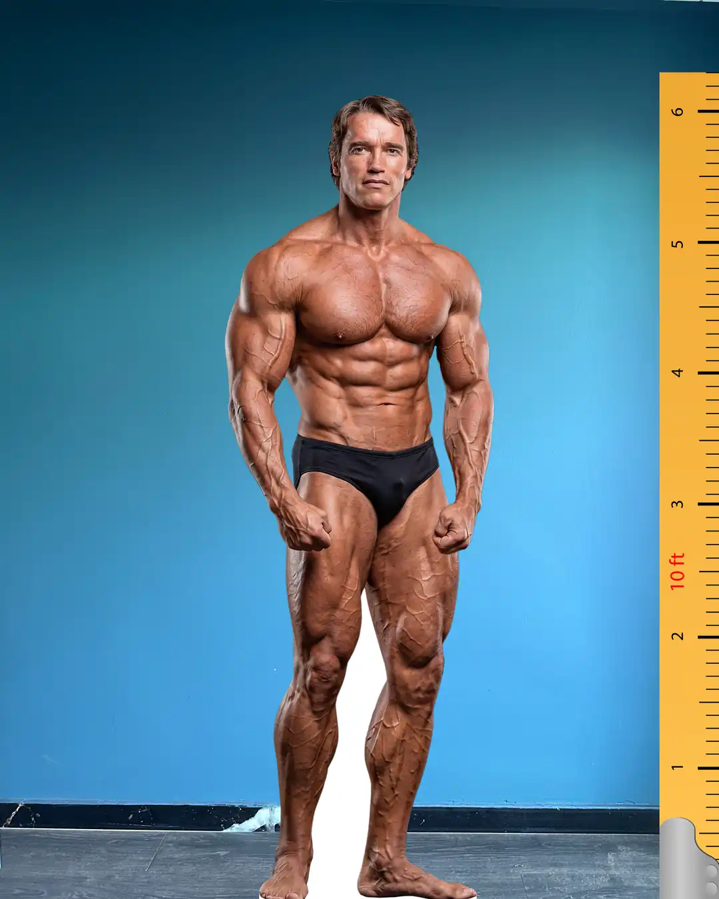

Vücut geliştirme tarihinin en ikonik ismi olan Arnold Schwarzenegger, sadece kazandığı 7 Mr. Olympia unvanıyla değil, sporu kitlelere sevdirmesiyle de efsaneleşmiştir. Altın çağ olarak adlandırılan dönemin en büyük temsilcisi olan Schwarzenegger, estetik ve kütleyi bir arada sunarak sporun akışını tamamen değiştirmiştir.